Thomas Foody

Sophie Holt

Lizzie Smith
I wrote journal entries for 82 days, from March 11th when we began quarantine until June 1st when I was finally able to go back to work. I did these partly out of boredom, partly because I wanted to see how much would change in this span of time. Reflecting back on this time has been good for the soul. I learned so much about myself and was able to really stop and see the beauty of the world around me, something I did not do enough of in all the busyness. 2020 has been trying, but honestly, I would not change a thing. I hope this does not come across as shallow or offensive to anyone. I know that covid has brought hardship to so many lives and I realize others have been through much more pain than I have. I certainly do not want to overlook that. I hope you enjoy this window into my life.
|
3/17: |

|
 |
4/1: |
Back when there was a mask shortage. |
 |
 |
Our quarantine garden. We planted tomatoes, beans, squash, cucumber, okra, lots of herbs, and sunflowers! |
4/3: |
 |
4/9: |
|
 |
4/12: |
4/21: |
 |
5/8: |
|
 |
I learned to cut hair. |
5/31: |
Rita English
Kaki Allende, Susanna Watson, Nikki Hughes & Siri Hauge
Kyle Herbert
Becca Heeke
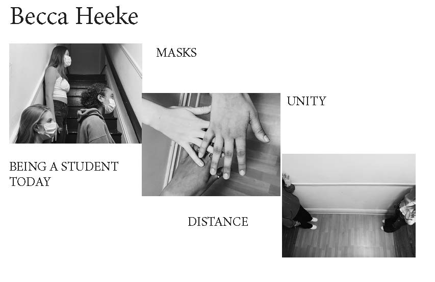Koty Fitzgerald
Allison Bilbey
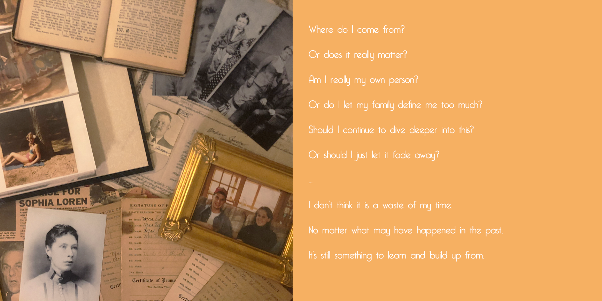 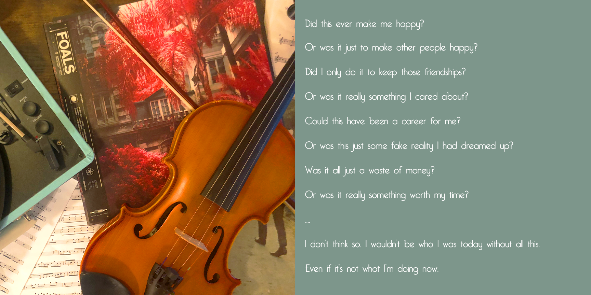 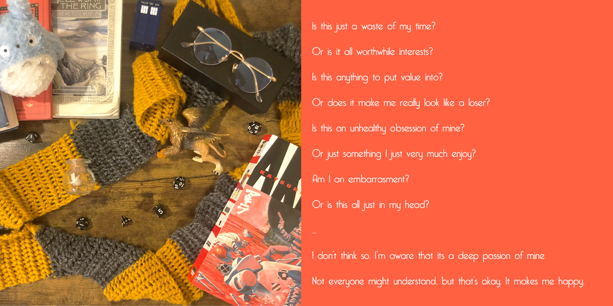 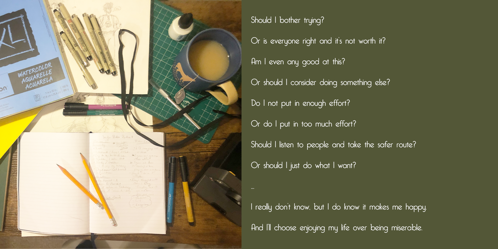Kevin Lee
Eric Couture
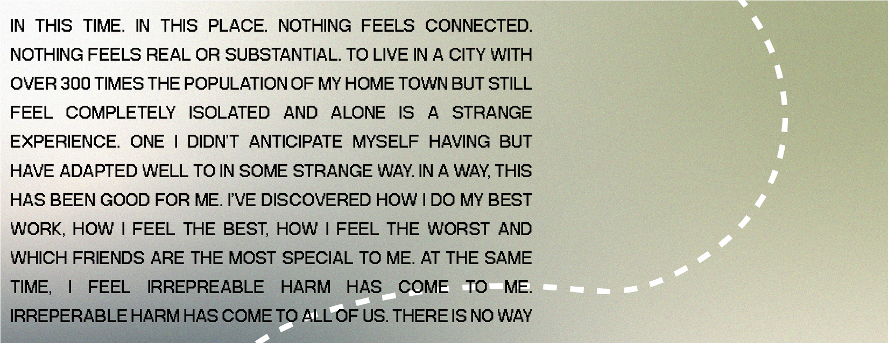 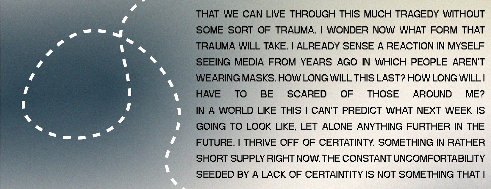 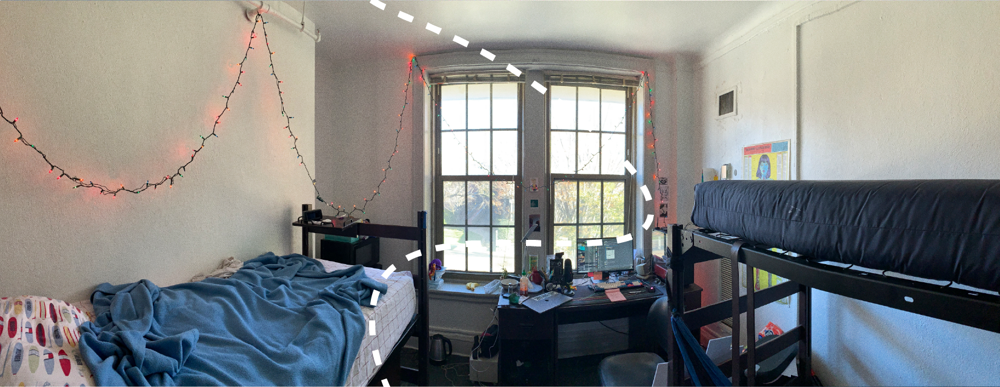 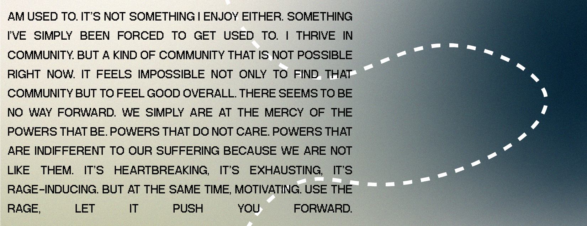 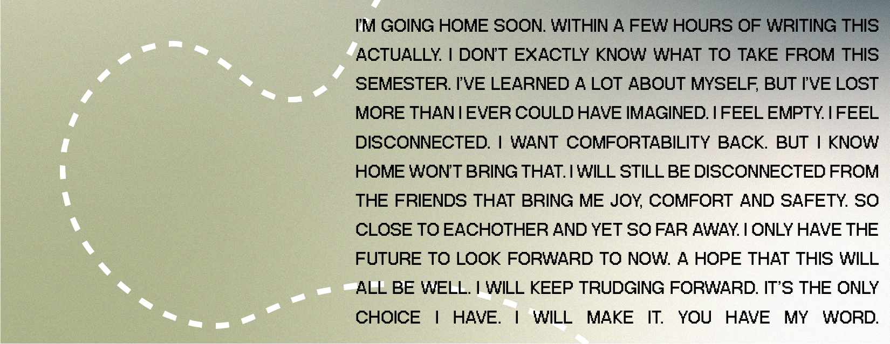 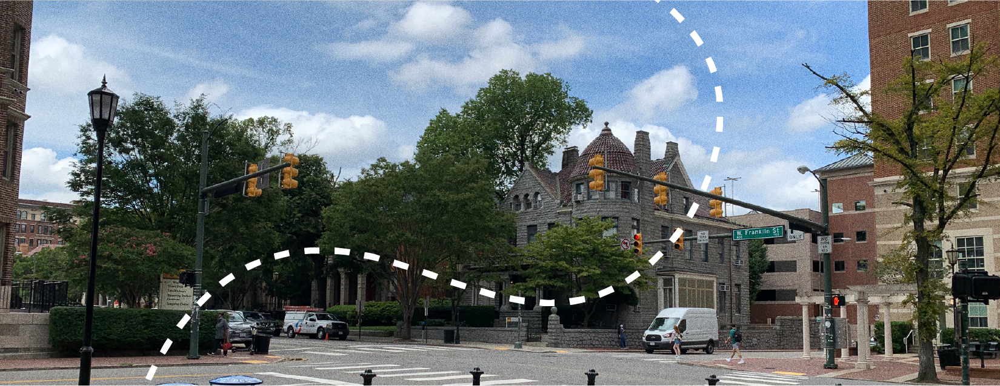Khristian Settle


Time Studio AM
Before and after images of our Time Studio class, a glorious exercise in collaboration and communitiy building.